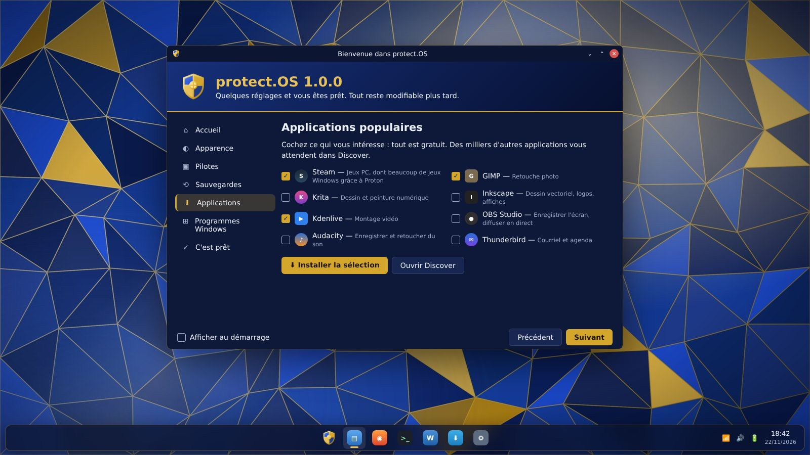
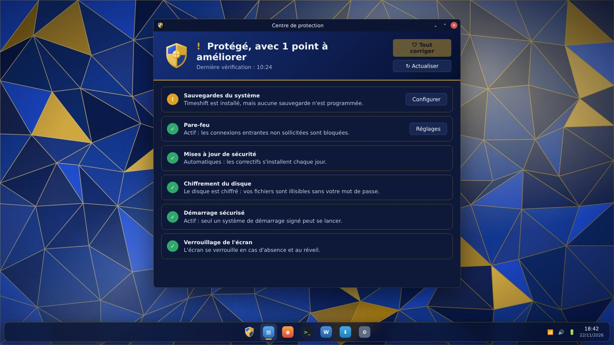
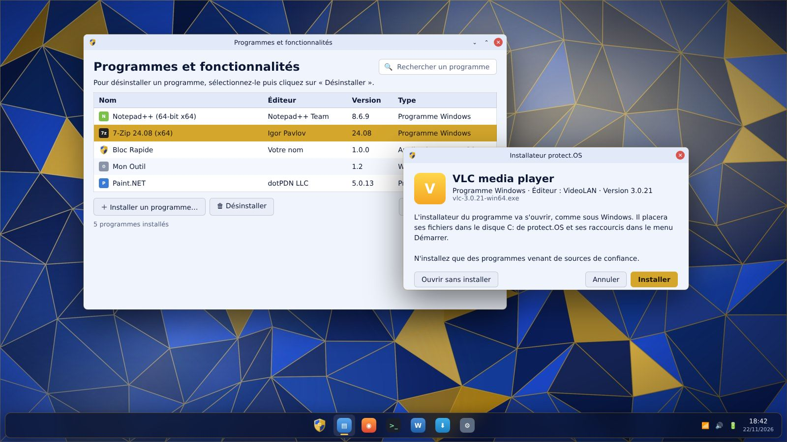
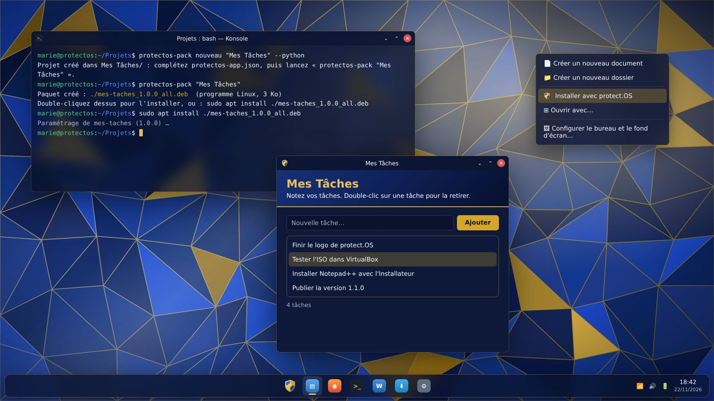
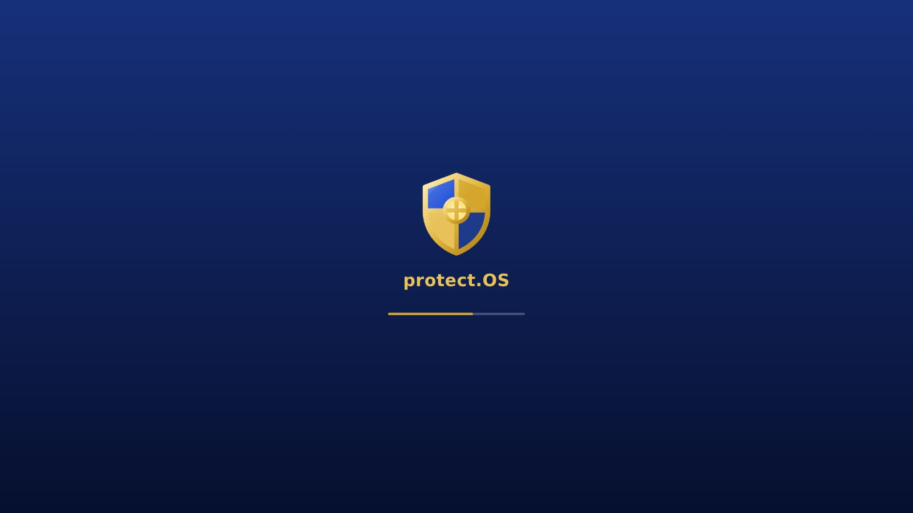

Familier dès le départ
Barre des tâches, menu Démarrer, boutons Réduire / Agrandir / Fermer : vos réflexes de Windows fonctionnent.
protect.OS se prend en main comme Windows, installe vos programmes Windows et veille sur votre ordinateur : antivirus, pare-feu, correctifs automatiques, sauvegardes. Gratuit, et sans publicité.

protect.OS s'installe en une vingtaine de minutes et il est prêt tout de suite.
Barre des tâches, menu Démarrer, boutons Réduire / Agrandir / Fermer : vos réflexes de Windows fonctionnent.
Double-cliquez sur un .exe pour l'installer. protect.OS ajoute même .NET ou Visual C++ quand un programme en a besoin.
Firefox, LibreOffice, VLC, l'impression et la numérisation sont déjà là. Discover et Flathub ajoutent des milliers d'applications : Spotify, Discord, Zoom…
Un thème sombre ou clair, un fond en vitrail, des menus et un terminal en verre translucide.
Correctifs de sécurité installés seuls chaque jour, pare-feu activé, antivirus, et chiffrement du disque conseillé dès l'installation.
Sans publicité ni compte obligatoire. Le code est ouvert : chacun peut vérifier ce que fait protect.OS, le corriger et l'améliorer.
Publicités et pisteurs bloqués sur tout l'ordinateur, Firefox réglé pour ne pas vous suivre, aucune télémétrie.
Temps d'écran, horaires autorisés et filtrage des sites inadaptés pour chaque compte enfant.
Nom, logo, couleurs, fond d'écran, noms des applications, raccourcis clavier, logiciels : tout se règle dans un seul fichier.
D'un coup d'œil, vous savez si votre ordinateur est protégé. Si quelque chose cloche, un clic suffit pour corriger.
À chaque ouverture de session, protect.OS vérifie discrètement et ne vous prévient qu'en cas de problème.

La plupart des logiciels classiques fonctionnent. Les pilotes de matériel, les jeux avec anti-triche et certaines suites très récentes ne fonctionnent pas.


L'outil protectos-pack transforme votre dossier en paquet installable d'un double-clic, avec raccourci, icône et mises à jour. Pour un programme Linux comme pour un .exe Windows.
# Une application Python bleu et or, prête à modifier protectos-pack nouveau "Mes Tâches" --python # Votre programme Windows, empaqueté pour protect.OS protectos-pack nouveau MonJeu --windows # Le paquet à partager protectos-pack "Mes Tâches"

Le démarrage : logo en vitrail et barre de progression dorée.
Aperçus réalisés à partir du thème de protect.OS ; l'affichage réel peut légèrement différer.
Essayez-le depuis une clé USB sans rien toucher à votre ordinateur, puis installez-le si vous l'aimez, seul ou à côté de Windows.
Image ISO pour PC 64 bits, environ 3 à 4 Go.
| Processeur | 64 bits (Intel ou AMD) |
| Mémoire | 4 Go, 8 Go conseillés |
| Disque | 30 Go libres |
| Clé USB | 8 Go ou plus |
Le lien de téléchargement s'active quand le site est publié depuis GitHub.
sha256sum -c SHA256SUMS
Oui. protect.OS et tous les logiciels inclus sont libres et gratuits, sans publicité ni abonnement.
Oui. L'installateur peut placer protect.OS à côté de Windows : au démarrage de l'ordinateur, un menu vous laisse choisir l'un ou l'autre. Faites quand même une sauvegarde de vos fichiers avant toute installation.
Beaucoup, mais pas tous. Les logiciels classiques et bureautiques fonctionnent généralement bien. Les pilotes de matériel, les jeux avec anti-triche et certaines suites très récentes ne fonctionnent pas. Pour la plupart des besoins, Discover propose aussi des équivalents gratuits.
Steam s'installe en un clic depuis l'assistant de bienvenue. Grâce à Proton, une grande partie des jeux Windows de Steam fonctionnent, sauf ceux qui utilisent un anti-triche incompatible.
Oui. La plupart des imprimantes sont reconnues dès qu'on les branche ou qu'elles sont sur le même réseau Wi-Fi, y compris les HP et Epson. Les scanners se pilotent avec l'application Skanlite.
Les correctifs de sécurité s'installent seuls, en arrière-plan, chaque jour, sans jamais redémarrer l'ordinateur à votre place. Les autres mises à jour et les nouveautés de protect.OS apparaissent dans Discover.
Oui. Basé sur ClamAV, il analyse les fichiers à risque dès qu'ils arrivent dans Téléchargements, vérifie chaque programme Windows avant de l'installer, et analyse à la demande un dossier ou une clé USB (clic droit, « Analyser avec l'antivirus »). Les fichiers dangereux sont mis en quarantaine. Ses signatures se mettent à jour chaque jour. Aucun antivirus n'est infaillible : restez prudent avec les fichiers d'origine inconnue.
Oui. Créez un compte standard pour chaque enfant, puis ouvrez « Contrôle parental » : temps d'écran par jour, horaires autorisés et filtrage des sites pour adultes ou malveillants. L'enfant est prévenu avant la fin, et seul un administrateur peut changer les réglages.
C'est fortement conseillé, surtout sur un portable. Cochez « Chiffrer le système » pendant l'installation et notez votre phrase secrète en lieu sûr : elle est demandée à chaque démarrage, et personne ne peut la contourner, pas même nous.
Ceux de Windows : Windows+E pour les fichiers, Ctrl+Maj+Échap pour le gestionnaire des tâches, Windows+I pour les paramètres, Windows+R pour exécuter, Windows+Maj+S pour une capture. Vous pouvez les changer, comme le nom des applications.
Non. protect.OS est un système indépendant, construit sur Debian et KDE Plasma. Il reproduit des habitudes de Windows, mais ne contient aucun code de Microsoft.